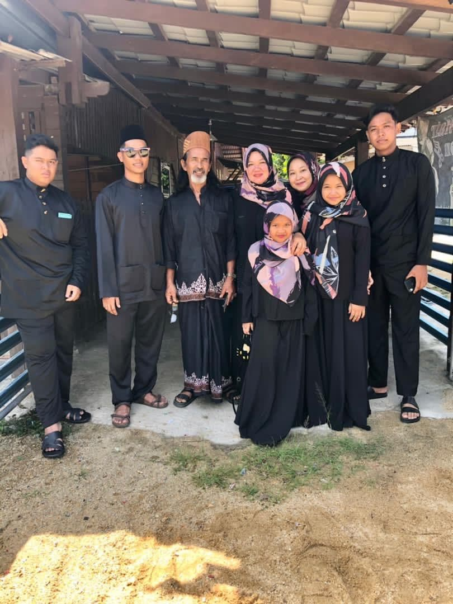

This is a picture of my family at the Aidilfitri celebration in 2021. In this picture, 7 other people are from my family. The position of picture no 2 from the right is the husband to my sister who is standing from no 3 from the left of the picture. My family is from Marang district, Terengganu. My mother, father, and younger sister make up my family. My mother, for example, is just like any other mother. She is kind, compassionate, and concerned, but you will know when she is upset. She is creative and enjoys doing activities that are related to art. She enjoys cooking and is quite inventive in that regard. She is the centre of our home and the driving force behind our family.
My father is the base on which our family is built. He's simultaneously strong and flexible. He is in charge of our household's discipline. He enjoys gardening and devotes a lot of his time to learning new gardening techniques. He adores us all and takes responsibility for our family's well-being. My father has been a source of inspiration for me. My younger sister is the naughty little one in our household. Because she is the youngest, fortune is constantly on her side. She has the angelic smile of her mother and the creative touch of her mother. Throughout the day, Art & Crafts capture her interest the longest. She is the little demon of our house, filling our house with frowns and grins on a regular basis.
I consider myself fortunate to have such a family. All of my family members are really close to me, and I am to them as well. My family's interpersonal relationships are fine, and we genuinely care for one another. When someone is in distress or has a problem, we aim to give timely assistance so that the issue may be resolved. Furthermore, I constantly try to assist my siblings with their academics, and my father occasionally assists them with their school work. My mother, on the other hand, looks after all of us. She is the most important member of the family. My family is significant to me for a variety of reasons. First and foremost, it is the location that I call home. At the end of the day, I literally return to my house, where my family resides. I can't see myself living without my family. My family members supplied me with all types of required help when I was younger, and I am really thankful to my parents for their unconditional support, which they continued to offer after my birth. My five siblings make me happy, and I can't picture my life without them. My family is my life, and it is thus more essential to me than anything else.
My family is where I go to unwind at the end of the day. This is the location where I am looked after. It helps me when I'm sick, when I'm depressed, and it encourages me to keep going. The other members also look after me in a variety of ways. I have a tremendous desire to protect my family. The sentiment is shared by family members as well. We like being in contact with each other when we are joyful. In fact, this is the most perfect family I've ever seen or encountered, with no serious conflicts. My family is more important to me than anything else in the world because of such things.